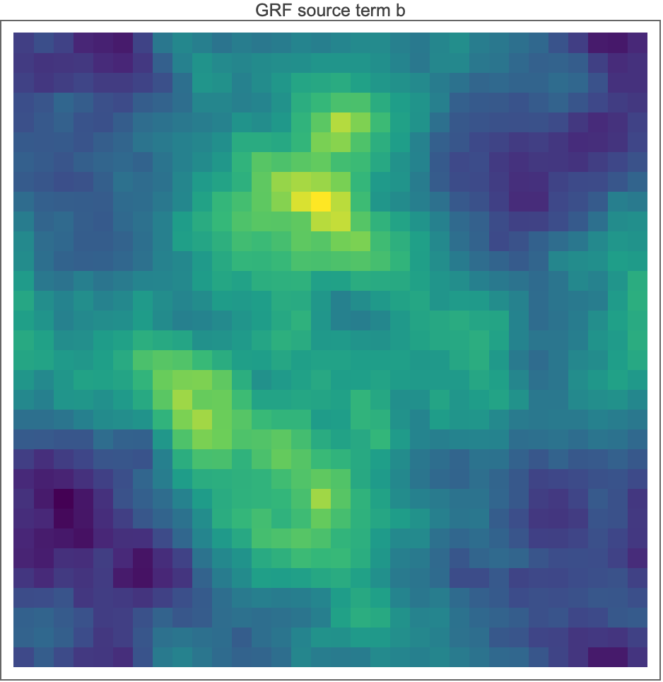
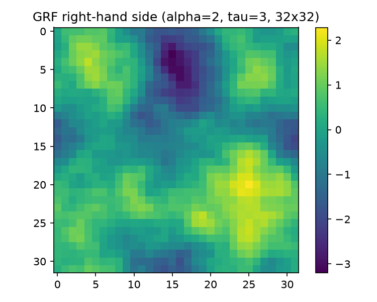
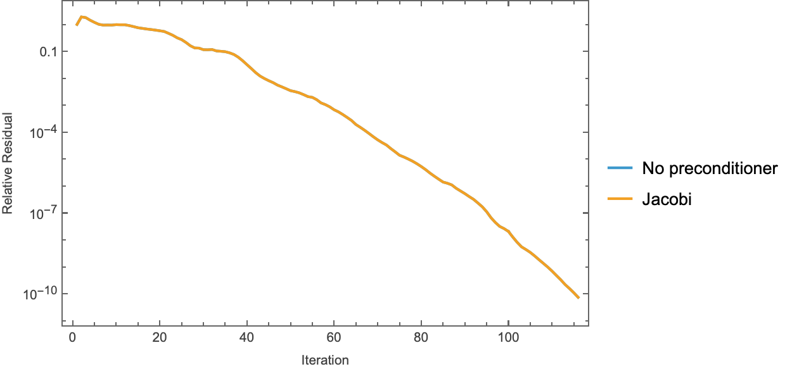
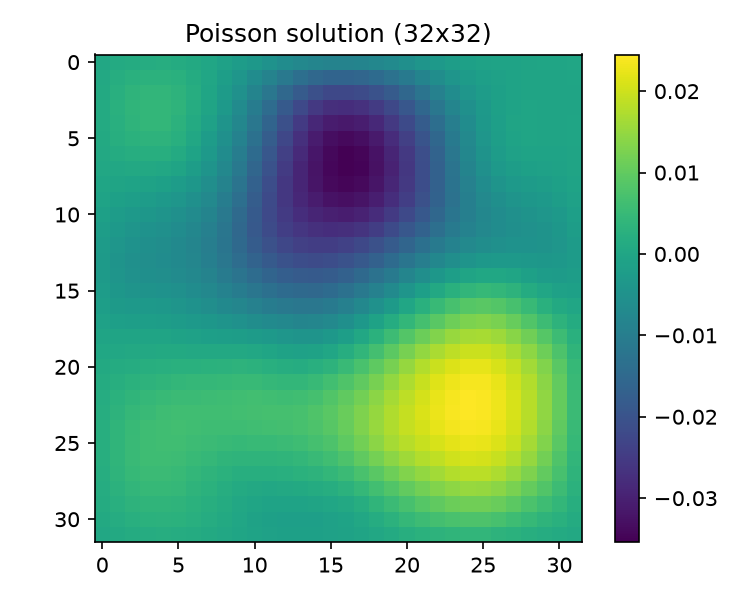

01 — Code Walkthrough
Complete construct-by-construct walkthrough of every piece of code in the repo: the Mathematica reference program, the Python port (with an explicit accounting of every place the port deviates and why the results are statistically equivalent but not bit-identical), and the two auxiliary Mathematica scripts. The mathematics behind the code is covered in the sibling reports — 02-eigenvalues.md (spectra), 03-gaussian-random-fields.md (the GRF right-hand side), 04-krylov-and-pcg.md (CG/PCG/FCG theory), 05-classical-preconditioners.md, 06-neural-preconditioner.md, 07-nystrom-preconditioning.md, and 08-results.md (all numbers in context). This report is about the code itself.
0. Repo map
mathematica/
poisson_pcg.wls # the reference program: problem + GRF + functional PCG (this report, §1)
eigen_check.wls # analytic-spectrum verification (§4; math in report 02)
nystrom_pcg.wls # randomized Nystrom preconditioner in Wolfram (§5; math in report 07)
python/
poisson.py # operators + GRF RHS — port of poisson_pcg.wls setup (§2.1)
pcg.py # pcg (classical) + flexible_pcg (Notay) (§2.2)
preconditioners.py # identity / jacobi / ilu factories (§2.3)
nystrom.py # NystromPreconditioner class (§6; full treatment in report 07)
neural/
npo.py # NAMG-lite network + NPOPreconditioner wrapper (§6; report 06)
train_npo.py # NPO training (report 06)
eval_npo.py # NPO vs CG evaluation (report 06)
experiments/
run_baseline.py # CG vs Jacobi baseline — port of poisson_pcg.wls driver (§2.4)
spectra.py # eigenvalue verification — Python analogue of eigen_check.wls (report 02)
run_nystrom.py # Nystrom ranks 16..256 + exact preconditioned kappa (report 07)
npo_spectrum.py # column-linearized NPO spectrum (report 06)
run_all.py # consolidated benchmark -> results/results.json (report 08)
results/ # *.json summaries + npo_checkpoint.pt
figures/ # all PNGs; mma_* are Mathematica exports
1. The Mathematica reference: mathematica/poisson_pcg.wls
A single wolframscript file that (i) builds the 5-point discrete Laplacian on a $32\times32$ interior grid, (ii) samples a Gaussian-random-field right-hand side, (iii) solves with CG and Jacobi-PCG using a purely functional PCG written around NestWhile, and (iv) exports three figures (figures/mma_source_grf.png, figures/mma_solution.png, figures/mma_convergence.png).
1.1 Problem setup (lines 26–36): Band, SparseArray, KroneckerProduct
n = 32;
h = 1.0/(n + 1);
d1 = SparseArray[
{Band[{1, 1}] -> 2.0, Band[{2, 1}] -> -1.0, Band[{1, 2}] -> -1.0},
{n, n}];
id = IdentityMatrix[n, SparseArray];
A = (KroneckerProduct[d1, id] + KroneckerProduct[id, d1])/h^2;
Band[{i, j}] -> vinsideSparseArrayfills the diagonal band starting at position $(i,j)$ and stepping by $(+1,+1)$ with the constantv. SoBand[{1,1}] -> 2.0is the main diagonal,Band[{2,1}] -> -1.0the first subdiagonal,Band[{1,2}] -> -1.0the first superdiagonal. Result: the tridiagonal $[-1, 2, -1]$ second-difference stencil for a homogeneous Dirichlet problem on $n$ interior nodes, without the $1/h^2$ scaling:
$$ d_1 = \begin{pmatrix} 2 & -1 & & \\ -1 & 2 & -1 & \\ & \ddots & \ddots & \ddots \\ & & -1 & 2 \end{pmatrix} \in \mathbb{R}^{n\times n}. $$
The values are written as machine reals (2.0, not 2) so the SparseArray is packed real from the start — no exact-integer arithmetic leaks into the solver.
- IdentityMatrix[n, SparseArray] — the second argument requests a sparse representation (a long-standing form, available since at least the 11.3-era releases); a dense identity would make the Kronecker products dense $1024\times1024$ blocks.
- KroneckerProduct sum. The 2-D operator is the standard tensor-sum construction
$$
A \;=\; \frac{1}{h^2}\left(d_1 \otimes I \;+\; I \otimes d_1\right) \in \mathbb{R}^{n^2 \times n^2},
$$
which is exactly the 5-point stencil $\frac{1}{h^2}[4u_{ij} - u_{i\pm1,j} - u_{i,j\pm1}]$ acting on grid functions flattened with the first index slowest (Mathematica Flatten order = row-major = C order; flat index $k = i\,n + j$). The tensor-sum structure is what makes the eigenvalues separable, $\Lambda_{k,l} = (\lambda_k + \lambda_l)/h^2$ — verified numerically in eigen_check.wls (§4) and derived in 02-eigenvalues.md. $A$ is SPD with constant diagonal $4/h^2 = 4\cdot 33^2 = 4356$; this single fact drives the Jacobi-equals-CG result in §1.4.
1.2 Gaussian random field RHS (lines 40–48)
alpha = 2.0;
tau = 3.0;
freqs = N@RotateRight[Range[-n/2, n/2 - 1], n/2]*n;
spectrum = 1.0/(Outer[Plus, freqs^2, freqs^2] + tau^2)^(alpha/2.0);
SeedRandom[42];
noise = RandomVariate[NormalDistribution[], {n, n, 2}] . {1, I};
grfRaw = Re@InverseFourier[noise*spectrum, FourierParameters -> {-1, -1}];
b = Standardize@Flatten@grfRaw;
grf = ArrayReshape[b, {n, n}];
This samples a mean-zero GRF with Matérn-like spectral density $(\vert k\vert ^2+\tau^2)^{-\alpha/2}$, the RHS distribution used for Poisson benchmarks in the FNO paper (Li et al., ICLR 2021), and the training/test distribution for the NPO (06-neural-preconditioner.md). The math is in 03-gaussian-random-fields.md; here is what each construct does:
- The frequency grid
RotateRighttrick.Range[-n/2, n/2-1]is $[-16,-15,\dots,15]$.RotateRight[list, n/2]moves the last $n/2 = 16$ elements to the front, giving $$ [\,0, 1, \dots, 15,\; -16, -15, \dots, -1\,], $$ i.e. exactly the DFT frequency-bin ordering (numpy.fft.fftfreq(n)*nordering): non-negative frequencies first, then the negative ones. This is required becauseInverseFourierconsumes coefficients in standard DFT bin order, not in "sorted frequency" order. The whole list is then multiplied byn(so the entries are $\{0, n, 2n, \dots\} \cup \{-n^2/2, \dots\}$) and wrapped inN@to force machine reals. The*nscaling only changes the effective $\tau$ (the spectrum shape parameter); it is reproduced verbatim in the port. spectrum—Outer[Plus, freqs^2, freqs^2]is the $n\times n$ matrix $f_x^2 + f_y^2 = \vert k\vert ^2$; the spectrum is $(\vert k\vert ^2+\tau^2)^{-\alpha/2}$ elementwise, with $\alpha = 2$, $\tau = 3$.- Complex white noise via a dot with
{1, I}.RandomVariate[NormalDistribution[], {n, n, 2}]draws an $n\times n\times 2$ real standard-normal tensor; dotting the last axis with{1, I}forms $\xi = \xi_{\mathrm{re}} + i\,\xi_{\mathrm{im}}$ — an $n\times n$ complex circular Gaussian with $\mathbb{E}\vert \xi\vert ^2 = 2$. This is a compact idiom for complex noise: oneRandomVariatecall, oneDot, and the draw order (all reals for the field, real/imag interleaved along the last axis) is fully determined — which matters for RNG-reproducibility of the Mathematica run itself. Note the noise is not Hermitian-symmetrized, soInverseFourierofnoise*spectrumis genuinely complex; theRe@projection is what makes the field real (this halves the variance relative to a Hermitian construction — irrelevant here because of the final standardization; see 03-gaussian-random-fields.md). FourierParameters -> {-1, -1}conventions. Mathematica's transforms are a two-parameter family $\{a, b\}$: $$ \text{Fourier: } v_s = \frac{1}{n^{(1-a)/2}} \sum_{r=1}^{n} u_r\, e^{2\pi i\, b\,(r-1)(s-1)/n}, \qquad \text{InverseFourier: } u_r = \frac{1}{n^{(1+a)/2}} \sum_{s=1}^{n} v_s\, e^{-2\pi i\, b\,(r-1)(s-1)/n}. $$ With $a = -1$, $b = -1$:InverseFourierhas prefactor $n^{-(1+a)/2} = n^0 = 1$ (no normalization) and kernel $e^{+2\pi i (r-1)(s-1)/n}$ (plus sign, because $b=-1$ flips the inverse kernel's sign). SoInverseFourier[..., FourierParameters -> {-1,-1}]is the unnormalized synthesis DFT — the same kernel asnumpy.fft.ifft2but larger by the factor $n^2$ (NumPy divides by $n$ per axis). $\{-1,-1\}$ is not one of Wolfram's named conventions ($\{0,1\}$ default, $\{-1,1\}$ "data analysis", $\{1,-1\}$ "signal processing"): it borrows the signal-processing kernel sign $b=-1$ but, via $a=-1$, puts the entire $1/n$-per-axis normalization onFourierinstead of splitting it. The default $\{0,1\}$ would give a $1/\sqrt{n}$ symmetric normalization and a minus-sign inverse kernel.Standardize@Flatten@grfRaw— flatten row-major, thenStandardizesubtracts the mean and divides by the sample standard deviation (the $1/(m-1)$ estimator). Two consequences: (i) any overall constant — including the $n^2$ FFT normalization and the $\mathrm{Re}$-projection variance factor — is annihilated, and (ii) the Python port must useddof=1, not NumPy's defaultddof=0(§2.1). The standardized flat vectorbis the RHS;grfreshapes it back only for plotting.
1.3 The functional PCG (lines 57–74): PCGSolve
PCGSolve[matA_, vecB_, precondFunc_, maxIter_ : 1000, tol_ : 10^-10] :=
Module[{bNorm = Norm[vecB], pcgStep, result},
pcgStep[{x_, r_, p_, rz_, _}] :=
Module[{Ap = matA . p, aStep, xNew, rNew, zNew, rzNew, relRes},
aStep = rz/(p . Ap); (* alpha_k = (r.z)/(p.Ap) *)
xNew = x + aStep*p;
rNew = r - aStep*Ap;
relRes = Norm[rNew]/bNorm;
Sow[relRes];
zNew = precondFunc[rNew];
rzNew = rNew . zNew;
{xNew, rNew, zNew + (rzNew/rz)*p, rzNew, relRes}];
result = Reap[
Sow[1.0];
NestWhile[pcgStep,
{0.*vecB, vecB, precondFunc[vecB], vecB . precondFunc[vecB], 1.0},
(#[[5]] > tol &), 1, maxIter]];
{result[[1, 1]], result[[2, 1]]}];
This is Saad's Algorithm 9.1 (PCG) written with no mutable state: the entire iteration is a pure function pcgStep from a 5-tuple to a 5-tuple, driven by NestWhile. Dissection:
- The state tuple $\{x, r, p, rz, \mathit{relres}\}$. Everything CG needs to advance one step: the iterate $x_k$, residual $r_k = b - Ax_k$, search direction $p_k$, the cached inner product $rz = r_k^\top z_k = r_k^\top M^{-1} r_k$ (avoids recomputing it in both $\alpha_k$ and $\beta_k$ — it is the denominator of the next $\beta$), and the last relative residual — carried solely so the halting predicate can see it (note the input pattern
{x_, r_, p_, rz_, _}deliberately ignores slot 5 with a blank_: the step never reads it, only writes it). pcgStepas a local downvalue.pcgStepis aModule-local symbol given a delayed definition on the tuple pattern. Per application it does exactly one sparse matvec (Ap = matA . p), one preconditioner apply (precondFunc[rNew]), two inner products (p.Ap,rNew.zNew), and three AXPYs — the canonical PCG cost. The recurrences implemented: $$ \alpha_k = \frac{r_k^\top z_k}{p_k^\top A p_k},\quad x_{k+1} = x_k + \alpha_k p_k,\quad r_{k+1} = r_k - \alpha_k A p_k,\quad z_{k+1} = M^{-1} r_{k+1},\quad \beta_k = \frac{r_{k+1}^\top z_{k+1}}{r_k^\top z_k},\quad p_{k+1} = z_{k+1} + \beta_k p_k . $$ The $\beta$ is the standard PCG ("Fletcher–Reeves-form") ratio of successive $r^\top z$ products; see 04-krylov-and-pcg.md for why this is only valid when $M$ is a fixed SPD linear operator — the precise property the neural preconditioner violates (06-neural-preconditioner.md).Sow/Reapresidual collection. Rather than threading a growing list through the state (which would make each step $O(\text{hist})$ in rewriting), the stepSows one scalarrelResper iteration into the dynamically-scopedReapsurrounding theNestWhile.Sow[1.0]before the loop seeds the history with the $k=0$ value $\Vert r_0\Vert /\Vert b\Vert = 1$ (since $x_0=0 \Rightarrow r_0=b$).Reap[expr]returns{expr, {sownLists}}; henceresult[[1, 1]]is the first component of the final state tuple ($x$) andresult[[2, 1]]the flat list of sown residuals. Convention: iterations performed =Length[resHist] - 1— used in the driver'sLength[resNone] - 1and preserved verbatim in the Python port.NestWhileas the driver / halting semantics.NestWhile[f, init, test, 1, maxIter]repeatedly appliesfwhiletest— applied to the most recent1result (the fourth argument) — returnsTrue, but at mostmaxItertimes. The predicate is(#[[5]] > tol &): continue while the state's 5th slot (last relres) exceedstol. Two subtleties: (i) the test is evaluated on the initial state too, so abwithrelres = 1.0 <= tolwould return immediately with zero iterations — irrelevant in practice but semantically clean; (ii) whenmaxIteris exhausted,NestWhilesimply returns the current state — no error — so a non-converged run is distinguishable only by its final relres (the Python port makes the same choice;run_all.pyrecords an explicitconvergedflag instead).- Initial state
{0.*vecB, vecB, precondFunc[vecB], vecB . precondFunc[vecB], 1.0}: $x_0 = 0$ (written0.*vecBso it stays a packed real array of the right shape), $r_0 = b$, $p_0 = z_0 = M^{-1}b$, $rz_0 = b^\top M^{-1} b$, relres $=1$. NoteprecondFunc[vecB]is evaluated twice here (once for $p_0$, once inside the inner product) — a 1-extra-apply inefficiency at setup that the Python port removes by storingz. - One "wasted" preconditioner apply at the end. The step computes
zNew = precondFunc[rNew]before the halting test can see the new relres, so the final iteration performs an $M$-apply whose result is never used. The Python port has the identical property (it appendsrelres, computesz = M(r), updatesp, and only then breaks) — deliberate, to keep the two residual histories aligned index-by-index. - Defaults:
maxIter_ : 1000,tol_ : 10^-10.10^-10is an exact rational; comparing a machine real against it is fine (it gets numericized in the comparison). The Python port usestol=1e-10butmaxiter=2000— see the divergence table in §3.
1.4 The solves (lines 78–88) and the Jacobi construction
{xNone, resNone} = PCGSolve[A, b, Identity];
...
invDiag = 1.0/Normal[Diagonal[A]];
{xJacobi, resJacobi} = PCGSolve[A, b, invDiag*# &];
- Plain CG is PCG with
precondFunc = Identity— the built-in identity function, cute and exact. Normal[Diagonal[A]]— the sparse-background gotcha.Diagonal[A]of aSparseArrayis itself aSparseArraywith background (default) element0.. Evaluating1.0/sparseVectorwould map the background through the reciprocal too, producingComplexInfinityon any structurally-unstored entry.Normaldensifies first so the elementwise reciprocal is safe. (Here the diagonal is the constant 4356 and dense anyway, but the idiom is written defensively — and it matters forvariable_poisson_2dwhere the port applies the same construction to a genuinely non-constant diagonal.)- The Jacobi preconditioner is the closure
invDiag*# &, i.e. $z = D^{-1} r$ elementwise. Since $D = (4/h^2) I$ exactly for this operator, Jacobi is a positive scalar multiple of the identity, and PCG iterates are invariant under positive scaling of $M$ — so Jacobi-PCG must reproduce plain CG iteration-for-iteration up to float rounding. The Python run confirms this to machine precision: both take 116 iterations, final relres6.666547523655469e-11(none) vs6.666547523655465e-11(Jacobi), max residual-history deviation4.441e-16(from results/baseline.json). Full discussion in 05-classical-preconditioners.md. - Line 88 prints
Norm[xNone - xJacobi]as a direct solution-mismatch check.
1.5 Figures (lines 93–116)
Wolfram 15.0 has no built-in "Viridis" color function, so lines 93–97 build one as a Blend over nine sampled matplotlib-viridis anchors (RGBColor[0.267, 0.005, 0.329] … RGBColor[0.993, 0.906, 0.144]) — purely cosmetic, to make

visually comparable with the matplotlib default in
. Exports:ArrayPlot of the GRF and of the reshaped Jacobi solution, and a ListLogPlot of both residual histories (
), each atImageResolution -> 150 to match the Python dpi=150.
2. The Python port
2.1 python/poisson.py — operators and GRF
laplacian_1d(n) (lines 18–40): scipy.sparse.diags([-1s, 2s, -1s], offsets=[-1,0,1], format="csr") — the exact Band construction of §1.1. Returns CSR.
poisson_2d(n) (lines 43–68): h = 1/(n+1), then
a = (sp.kron(d1, eye) + sp.kron(eye, d1)) / h**2
— literally the KroneckerProduct line. The module docstring (lines 9–11) pins down the flattening convention: matrices act on grid functions flattened row-major (C order), flat index $k = i\,n + j$ with the first axis slowest — the same as Mathematica's Flatten — so the operator, RHS, and any reshape-for-plotting agree between the two languages with no permutation.
variable_poisson_2d(n, contrast=100.0) (lines 71–128): new in the port (no Mathematica counterpart) — a finite-volume discretization of $-\nabla\!\cdot(a\nabla u)$ with the piecewise coefficient $a = 1$ for $x<\tfrac12$, $a = \text{contrast}$ for $x\ge\tfrac12$. Construction:
- nodal coefficients
a_nodes = where(x < 0.5, 1, contrast)at $x_i = ih$ (lines 111–112); - harmonic-mean face transmissibilities in $x$ (lines 116–119): $$ w_{i+1/2} = \frac{2\,a_i\,a_{i+1}}{a_i + a_{i+1}}, $$ the flux-continuity-preserving average at a material interface (LeVeque, Sec. 2.15); boundary faces copy the adjacent nodal value since $a$ is constant near each boundary;
- the $x$-direction tridiagonal
tx = diags([-w[1:-1], w[:-1]+w[1:], -w[1:-1]])(lines 121–125): row $i$ has diagonal $w_{i-1/2}+w_{i+1/2}$ and off-diagonals $-w_{i\pm 1/2}$; - because $a$ depends only on $x$, the $y$-direction stencil at row $i$ is just $a_i \cdot [-1,2,-1]$, so the assembly is the Kronecker sum (line 127) $$ A = \frac{1}{h^2}\Bigl(T_x \otimes I + \operatorname{diag}(a)\otimes d_1\Bigr). $$
The purpose is stated in the docstring (lines 94–96): with contrast 100, $\operatorname{diag}(A)$ jumps from $(2\cdot 1 + 2\cdot 1)/h^2 = 4356$ in the $a{=}1$ region to $(2\cdot 100 + 2\cdot 100)/h^2 = 435{,}600$ in the $a{=}100$ region, so Jacobi is no longer a scalar multiple of the identity and becomes a real preconditioner: 137 vs 771 iterations, a 5.6× reduction (results/results.json, variable; analysis in 05-classical-preconditioners.md and 08-results.md).
grf_rhs(n, alpha=2.0, tau=3.0, seed=42) (lines 131–184) — the port of §1.2, with the three deliberate deviations documented in its Notes block (lines 147–157):
f = np.roll(np.arange(-n // 2, n // 2), n // 2) * n
spectrum = 1.0 / (f[:, None] ** 2 + f[None, :] ** 2 + tau**2) ** (alpha / 2.0)
rng = np.random.default_rng(seed)
noise = rng.standard_normal((n, n, 2)) @ np.array([1.0, 1.0j])
field = np.real(np.fft.ifft2(noise * spectrum))
flat = field.ravel()
return (flat - flat.mean()) / flat.std(ddof=1)
Line-by-line correspondence:
| Mathematica | Python | note |
|---|---|---|
RotateRight[Range[-n/2, n/2-1], n/2]*n |
np.roll(np.arange(-n//2, n//2), n//2) * n |
np.roll(·, +k) also moves the last $k$ elements to the front — identical output [0..15, -16..-1]*32 |
Outer[Plus, freqs^2, freqs^2] |
f[:,None]**2 + f[None,:]**2 |
broadcasting = Outer[Plus, ...] |
RandomVariate[...,{n,n,2}] . {1,I} |
rng.standard_normal((n,n,2)) @ [1, 1j] |
same construction, different RNG stream |
Re@InverseFourier[·, FourierParameters->{-1,-1}] |
np.real(np.fft.ifft2(·)) |
same $e^{+2\pi i k\cdot x}$ kernel; differ by the constant $n^2$ (Mathematica unnormalized, NumPy divides by $n^2$) |
Standardize@Flatten@grfRaw |
(flat - flat.mean()) / flat.std(ddof=1) |
ravel() is row-major = Flatten; ddof=1 = sample std = Standardize |
Why the $n^2$ and $\mathrm{Re}$ factors don't matter: both are overall positive constants on the field, and the final standardization maps the field affinely to mean 0 / sample-std 1, so any overall scaling cancels exactly. The only non-cancelling difference is the RNG stream itself — see §3.
2.2 python/pcg.py — pcg and flexible_pcg
pcg(A, b, M=None, tol=1e-10, maxiter=2000) (lines 15–81) is the imperative transliteration of PCGSolve, one Mathematica state-slot per Python local:
PCGSolve |
pcg (line) |
|
|---|---|---|
{0.*vecB, vecB, precondFunc[vecB], vecB.precondFunc[vecB], 1.0} |
x = zeros; r = b.copy(); z = M(r); p = z.copy(); rz = r @ z (61–65) |
init; the port computes M(b) once (the .wls evaluates it twice) |
Ap = matA . p |
Ap = A @ p (68) |
one matvec |
aStep = rz/(p . Ap) |
alpha = rz / (p @ Ap) (69) |
|
xNew = x + aStep*p; rNew = r - aStep*Ap |
lines 70–71 | |
relRes = Norm[rNew]/bNorm; Sow[relRes] |
res_hist.append(norm(r)/bnorm) (72–73) |
res_hist = [1.0] (line 59) plays Sow[1.0]; iterations = len(res_hist) - 1 |
zNew = precondFunc[rNew]; rzNew = rNew.zNew |
z = M(r); rz_new = r @ z (74–75) |
same "wasted" final apply as the .wls (§1.3) |
zNew + (rzNew/rz)*p |
p = z + (rz_new/rz) * p (76) |
Fletcher–Reeves-form $\beta$ |
NestWhile[..., #[[5]] > tol &, 1, maxIter] |
for _ in range(maxiter): ...; if relres <= tol: break (67, 78–79) |
continue-while > tol ≡ break-when <= tol; both cap at maxiter and return silently on non-convergence |
M=None maps to an identity lambda (line 55); b is coerced to float64 (line 57). The only semantic difference from NestWhile is that the Python loop never tests the initial state — harmless since res_hist[0] = 1.0 > tol for any meaningful tolerance. Neither implementation guards bnorm == 0.
flexible_pcg(A, b, M, ...) (lines 84–141) is identical except for one line — the search-direction update (line 134):
beta = (z_new @ (r_new - r)) / rz # Polak-Ribiere (Notay 2000)
i.e. $\beta_k = z_{k+1}^\top (r_{k+1} - r_k) / (z_k^\top r_k)$, the Polak–Ribière form of Notay, Flexible Conjugate Gradients, SIAM J. Sci. Comput. 22(4), 2000. It subtracts the stale component $z_{k+1}^\top r_k$ that the Fletcher–Reeves ratio silently assumes is zero — an assumption that holds only for a fixed SPD $M$ and is false for the ReLU-bearing NPO. The cost is one extra stored vector (r is kept alongside r_new, lines 130–136). Consequence in the results: FCG+NPO converges in 30 iterations while plain PCG+NPO stalls at relres 9.653e-06 after 2000 iterations (results/results.json, fcg_npo / cg_npo); the mechanism is dissected in 04-krylov-and-pcg.md and 06-neural-preconditioner.md.
2.3 python/preconditioners.py
Three factories, each returning a callable $z = M(r) \approx A^{-1} r$ — the exact interface of precondFunc in the .wls:
identity()(line 11):lambda r: r. Provided for symmetry;pcg(M=None)is the same thing.jacobi(A)(lines 22–41):inv_diag = 1.0 / A.diagonal()thenlambda r: r * inv_diag— the port ofinvDiag*# &. SciPy's.diagonal()returns a dense ndarray, so theNormal[...]densification gotcha of §1.4 does not arise. The docstring (lines 25–29) restates the scalar-multiple-of-identity fact forpoisson_2d.ilu(A, **kw)(lines 44–60):scipy.sparse.linalg.spilu(A.tocsc(), **kw)(SuperLU incomplete LU; CSC required) wrapped aslambda r: fac.solve(np.asarray(r, dtype=np.float64)). Withspiludefaults this is by far the strongest classical option in the suite: 5 iterations to6.212e-13, solve wall0.00024 splus0.00100 ssetup (results/results.json,cg_ilu; discussion in 05-classical-preconditioners.md). No Mathematica counterpart.
2.4 python/experiments/run_baseline.py — the driver port
Port of the .wls driver (§1.4) plus verification the Mathematica script lacks. Flow of main() (lines 34–108):
A = poisson_2d(32),b = grf_rhs(32, alpha=2.0, tau=3.0, seed=42)(lines 36–37).pcg(A, b, M=None)andpcg(A, b, M=jacobi(A))(lines 39–40); iteration counts vialen(res) - 1(lines 42–43) — theLength[resHist] - 1convention.- Direct-solve verification (lines 50–53):
spla.spsolve(A.tocsc(), b)and relative errors. From results/baseline.json:relerr_vs_spsolve_none = 5.3995e-12,relerr_vs_spsolve_jacobi = 5.3995e-12. - Jacobi≡CG check (lines 57–59): max elementwise deviation between the two residual histories over their common length —
4.441e-16, i.e. two ULPs at scale 1; recorded into the JSONnote. - Figures (lines 66–89):
 (semilogy of both histories), ,
(semilogy of both histories), , 
(both viafield.reshape(n, n)— valid because of the shared row-major convention). - JSON summary → results/baseline.json (lines 91–107): 116/116 iterations, final relres
6.666547523655469e-11/6.666547523655465e-11. These records are bit-identical to thecanonical.cg_none/cg_jacobientries later produced byrun_all.pyin results/results.json — the whole pipeline is deterministic (fixed seeds, single-threaded sparse matvecs).
Boilerplate worth noting: matplotlib.use("Agg") before pyplot (headless safety, lines 20–22) and sys.path.insert(0, ...parents[1]) (line 27) so python/ modules import without packaging.
3. Divergence ledger: every place the port differs, and why results match statistically but not bit-for-bit
| # | Divergence | Mathematica | Python | Consequence |
|---|---|---|---|---|
| 1 | RNG | SeedRandom[42] → Wolfram's default generator (ExtendedCA-family); draw order fixed by the single {n,n,2} RandomVariate |
np.random.default_rng(42) → PCG64 |
The one real divergence. The two b vectors are different samples from the same distribution (the pipeline after the raw draws is exactly equivalent, items 2–4). Hence Mathematica iteration counts need not equal Python's 116; they agree statistically (same $\kappa(A)$, same GRF law). No cross-language bit-match is possible or claimed — results/*.json numbers all come from the Python runs. |
| 2 | FFT normalization | InverseFourier[·, {-1,-1}]: prefactor 1 |
np.fft.ifft2: prefactor $1/n^2$ |
Same $e^{+2\pi i k\cdot x}$ kernel; pure constant factor $n^2$, annihilated by standardization. Zero statistical effect. |
| 3 | Std-dev estimator | Standardize uses sample std ($m{-}1$) |
flat.std(ddof=1) |
Matched deliberately; NumPy's default ddof=0 divisor is smaller by $\sqrt{1023/1024}$, so using it would rescale b up by $\sqrt{1024/1023}$ — still harmless for CG iterates (scale invariance) but would break bit-level determinism within Python between the two choices. |
| 4 | Flattening order | Flatten row-major |
ravel() row-major (C order) |
Matched exactly; no permutation anywhere. |
| 5 | maxiter default |
1000 | 2000 | Immaterial for converging runs (max observed: 771). The larger cap exists so the deliberately-failing cg_npo run can demonstrate its stall at 2000 iterations (08-results.md). |
| 6 | tol type / halting test | exact rational 10^-10; NestWhile continues while relres > tol, tests initial state |
float 1e-10; break when relres <= tol, never tests initial state |
Logically identical for res_hist[0] = 1.0; same histories index-by-index. |
| 7 | Setup $M$-applies | precondFunc[vecB] evaluated twice at init |
z = M(r) once, reused |
Cost-only; identical numbers. |
| 8 | Extras with no .wls counterpart | — | variable_poisson_2d, ilu, flexible_pcg, spsolve verification, NystromPreconditioner (Python class), NPO |
Additive; the shared subset (CG/Jacobi on the canonical problem) is the correspondence surface. |
Bottom line: within Python everything is bit-deterministic (fixed seeds; reruns reproduce results/baseline.json, results/nystrom.json, results/npo_eval.json exactly). Across languages items 2–4 and 6–7 are exact equivalences; item 1 (RNG) is the sole source of discrepancy and is irreducible without implementing one RNG inside the other.
4. mathematica/eigen_check.wls — brief
Rebuilds d1 and A exactly as in §1.1, then verifies against closed forms (derivations in 02-eigenvalues.md):
- 1-D (lines 29–32):
Eigenvalues[Normal[d1]]vs $\lambda_k = 2 - 2\cos\!\big(k\pi/(n{+}1)\big)$, compared afterSorton both sides. - 2-D (lines 35–38): dense
Eigenvalues[Normal[A]]($1024\times1024$ — fine at this size) vs the tensor sumsFlatten@Outer[Plus, lam1d, lam1d]/h^2. - Condition number (lines 41–45):
Max/Minof the computed spectrum vs the analytic $\kappa(A) = \cot^2\!\big(\pi/(2(n{+}1))\big)$ — algebraically the same as the $\sin^2$-ratio form used in the Python analogue python/experiments/spectra.py.
The Python counterpart's verified numbers (results/spectra.json): 1-D max deviation 2.220e-15, 2-D max deviation 2.728e-11 (consistent with $\sim 10^4$-magnitude eigenvalues at float64), $\kappa$ computed 440.6885603835139 vs analytic 440.6885603836582, asymptote $4(n{+}1)^2/\pi^2 = 441.36$.
5. mathematica/nystrom_pcg.wls — brief
Same problem setup and the verbatim PCGSolve (lines 22–60), plus a Wolfram implementation of the randomized Nyström preconditioner of Frangella–Tropp–Udell (https://arxiv.org/abs/2110.02820); full math in 07-nystrom-preconditioning.md. NystromPreconditioner[matA, ell, seed] (lines 72–94):
- Gaussian sketch
Omega($N\times\ell$),Y = A.Omega; stabilization shiftnu = Sqrt[N] $MachineEpsilon ||Y||_F;Ynu = Y + nu*Omega. - Core factorization:
CholeskyDecompositionof the explicitly symmetrized(Omega^T.Ynu + (Omega^T.Ynu)^T)/2(line 81–82) — symmetric only in exact arithmetic, so symmetrization protects the Cholesky. B = Ynu.C^{-1}via a triangularLinearSolveon the transpose (line 84), then thinSingularValueDecomposition; eigenvalueslams = Max[0, sigma^2 - nu]with exact-zero directions dropped (lines 86–89).- The apply (line 93) is Eq. (5.3) at $\mu = 0$: $P^{-1}r = \lambda_\ell\, U(\Lambda^{-1}(U^\top r)) + (r - U U^\top r)$. (Equation numbering is the SIAM version's, matching python/nystrom.py: the $P$/$P^{-1}$ pair is the third numbered equation of their §5 — eq. (17) of the continuously-numbered arXiv v3 — and $P$ alone is Eq. (1.3). The .wls header's citation has been corrected accordingly; "(5.2)" is the optimal low-rank preconditioner's condition number, not this formula.)
- Slot-syntax gotcha (comment, lines 91–92): the apply closure is written with
#/&rather thanFunction[r, ...], because a named parameterrwould collide with the pattern variabler_used insidePCGSolve'spcgStep— a Wolfram scoping hazard the code sidesteps by using slots.
Differences from the Python python/nystrom.py class worth flagging (details in 07-nystrom-preconditioning.md): the Python version follows Algorithm 2.1 more strictly — it orthonormalizes the sketch (np.linalg.qr(omega), python/nystrom.py line 105) where the .wls uses the raw Gaussian Omega; its shift is np.spacing(||Y||_F) (one ULP) vs the .wls's $\sqrt{N}\,\varepsilon\,\Vert Y\Vert _F$; and it has the paper's Cholesky-failure fallback loop (nu *= 100, retry ×4, lines 113–124) plus a mu > 0 generalization and a degenerate-rank guard. The .wls script runs only $\ell = 128$; the Python experiment sweeps ranks 16/64/128/256 and additionally computes the exact preconditioned condition numbers by dense eigensolves (439.62 / 434.52 / 426.58 / 407.46 vs unpreconditioned 440.69, results/nystrom.json) — the "Nyström is marginally worse than plain CG here" story (123/123/122/119 iterations vs 116) is told in 07-nystrom-preconditioning.md and 08-results.md.
6. The rest of python/ — one paragraph each, with pointers
- python/nystrom.py —
NystromPreconditionerclass: Algorithm 2.1 steps 1–9 annotated line-by-line in the constructor (lines 103–129), the $\mu=0$ eigenvalue-drop policy (lines 135–148, rationale in the class docstring lines 53–62), and the $O(N\cdot\text{rank})$ applyP^{-1}r = U(d \odot U^\top r) + rwith $d_i = (\lambda_\ell+\mu)/(\lambda_i+\mu) - 1$ (lines 150–172). The module docstring's "honest expectation" paragraph (lines 13–21) predicts the flat-top-spectrum failure mode before the experiment confirms it. → 07-nystrom-preconditioning.md. - python/neural/npo.py — the NAMG-lite
NPOnetwork (lift + coordinate channels, pre/post 3×3-conv ReLU relaxations, learned-coarse-query cross-attention restriction, coarse self-attention + FFN, cross-attention prolongation with residual coarse-grid correction; forward pass lines 122–168) and theNPOPreconditionerwrapper (unit-norm normalization → float32 network → rescale, making the map positively 1-homogeneous; lines 205–229). The $\hat A = h^2 A$ training-scale trick (comment lines 47–53) exploits PCG's scale invariance in $M$. Toy-scale reimplementation of NPO, Li et al., https://arxiv.org/abs/2502.01337. → 06-neural-preconditioner.md. - python/neural/train_npo.py — dataset of GRF RHSs (seeds 100–139) plus CG-residual snapshots at iterations (1,2,4,8,16,32,64) captured by a
_RecordingIdentitypreconditioner shim (lines 64–77); three scale-free losses (condition Eq. 9, residual Eq. 10, data loss with exact sparse-LU targets); 400 epochs, warmup + cosine LR. Writesresults/npo_checkpoint.ptand results/npo_training_history.json. → 06-neural-preconditioner.md. - python/neural/eval_npo.py — held-out seed-42 problem; CG vs FCG(NPO) vs plain-PCG(NPO) (the last recorded deliberately as a negative control); writes results/npo_eval.json and
 . → 06-neural-preconditioner.md.
. → 06-neural-preconditioner.md. - python/experiments/spectra.py — Python analogue of
eigen_check.wlsplus the $\kappa(n)\sim 4(n{+}1)^2/\pi^2$ scaling study over $n\in\{8,16,32,64,128\}$ (analytic formula only, lines 83–87); writes results/spectra.json and figures ,
,  ,
,  . → 02-eigenvalues.md.
. → 02-eigenvalues.md. - python/experiments/run_nystrom.py — rank sweep with exact preconditioned spectra via the closed-form $P^{-1/2} = I + U(\sqrt{s}-1)U^\top$ symmetrization (
preconditioned_spectrum, lines 39–66 — chosen over nonsymmetriceigto guarantee real eigenvalues) and the optimal-rank-$\ell$ deflation reference $\kappa_{\text{opt}} = \lambda_{\ell+1}/\lambda_{\min}$ (line 104). → 07-nystrom-preconditioning.md. - python/experiments/npo_spectrum.py — column linearization $\tilde M[:,j] = M_\theta(e_j)$ over all 1024 basis vectors, nonsymmetric
eigof $\tilde M A$, plus nonsymmetry ($\Vert \tilde M - \tilde M^\top\Vert _F/\Vert \tilde M\Vert _F$) and nonlinearity ($\Vert \tilde M b - M_\theta(b)\Vert /\Vert M_\theta(b)\Vert $) diagnostics; writes results/npo_spectrum.json and . → 06-neural-preconditioner.md.
. → 06-neural-preconditioner.md. - python/experiments/run_all.py — the consolidated benchmark behind results/results.json: the full method matrix on the canonical problem, the variable-coefficient Jacobi contrast, per-method
run_methodrecords (iterations / final_relres / wall_time_s / setup_time_s / relerr_vs_spsolve / converged, lines 58–94), five sanity checks with the Nyström strict-monotonicity check deliberately report-only (lines 176–196 — ranks 16 and 64 tie at 123 iterations, sonystrom_strictly_decreasing_with_rankisfalsewhile the asserted non-increasing-with-overall-decrease check passes), hardasserton the other four (lines 254–261), and . → 08-results.md.
. → 08-results.md.